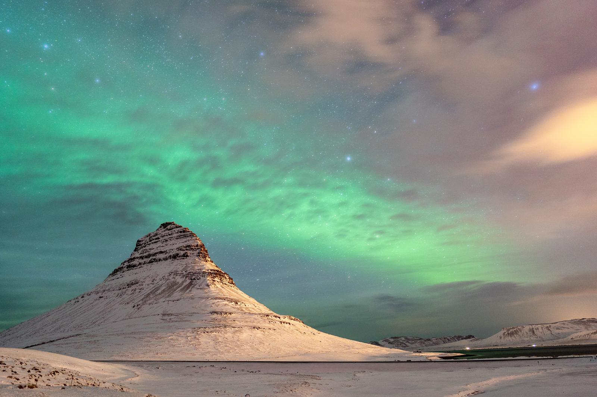
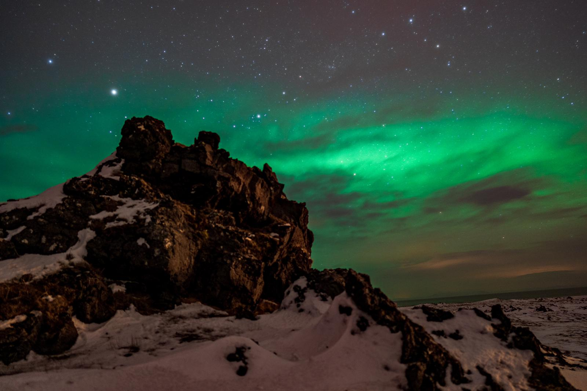
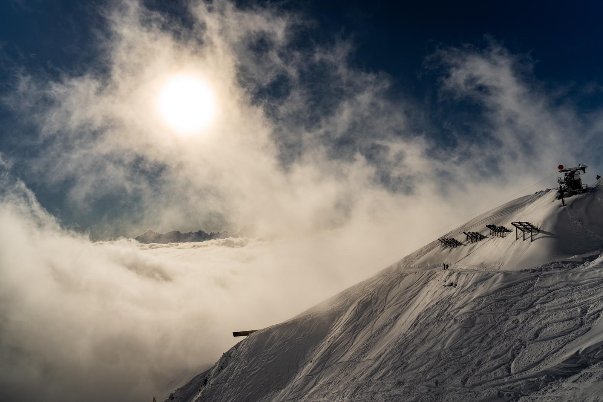
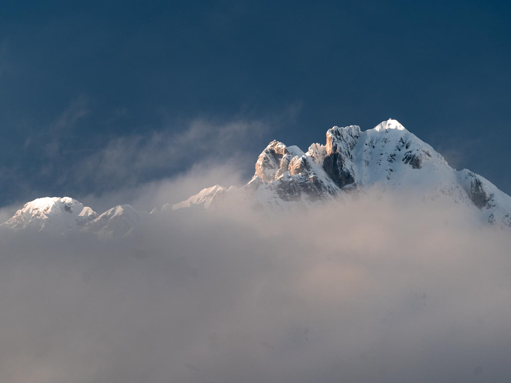
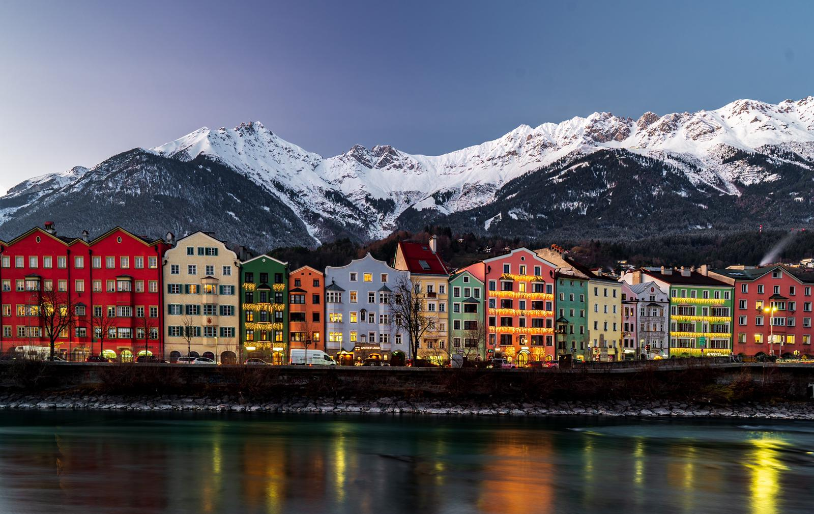
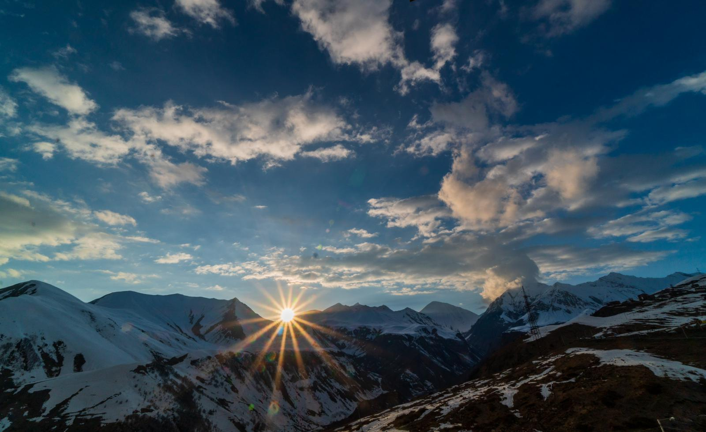
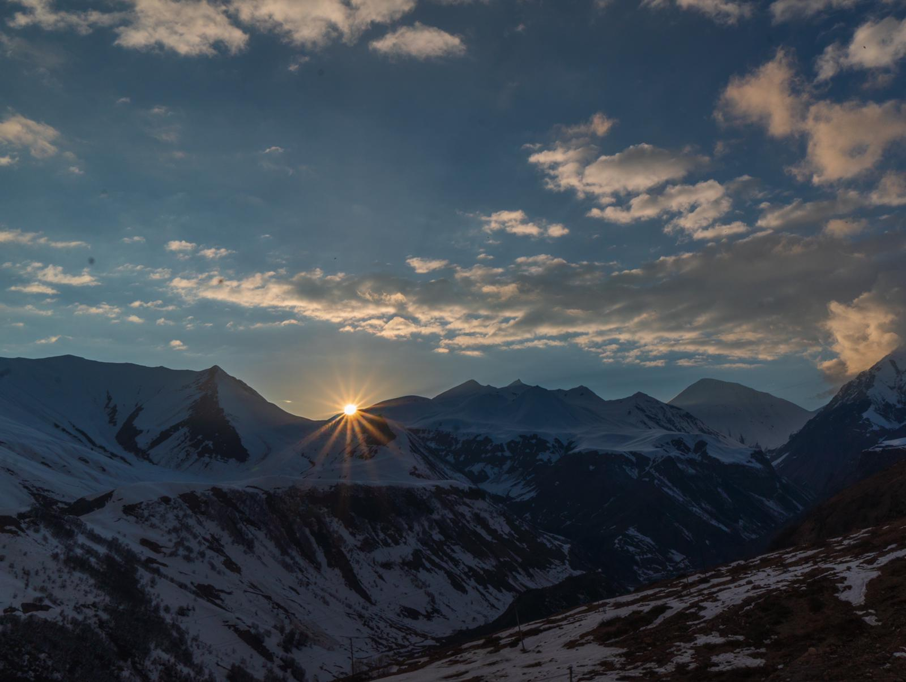

Postari pe Blog
ISLANDA
Islanda e cel mai frumos loc in care am fost vreodata. Nu am fost peste tot, dar este, cu siguranta, cel mai frumos de pana acum. E locul in care am avut parte de patru anotimpuri intr-o singura zi, si e tara in care am intalnit cele mai multe paradoxuri. E locul in care m-am simtit acasa, dar in acelasi timp, atat de vulnerabila. Este, de asemenea, locul in care prietenul meu m-a cerut in casatorie sub cerul luminat de aurora boreala, si e locul ale caror coordonate geografice ni le-am tatuat amandoi, ca sa marcam incarcatura sentimentala a momentului si spatiului respectiv.
Fotografiile sunt realizate de iubitul meu, Robert Pujina! Go & follow him on Instagram.
Innsbruck - îmbinarea perfectă a atmosferei de oraş cosmopolit şi vacanţă la
schi!
Innsbruck, capitala Tirolului, se află la o înălţime de 575 m şi vă pune la dispoziţie o ofertă culturală de invidiat şi un centru vechi fermecător. Situat într-o culisă montană impresionantă, între lanţul nordic al munţilor Karwendel şi lanţurile pre-Alpilor centrali oraşul vă aşteaptă cu străduţe frumoase şi înguste pentru plimbări lungi. Ca atracţii speciale merită menţionate "Goldene Dachl" - acoperişul de aur în stil târziu gotic, cu 2.657 plăci de cupru aurite, Annasäule, Hofburg sau o excursie la renumita "Bergisel-Schanze" - pentru sărituri. Ideală pentru fanii schiului şi unică pentru un oraş mare este reţeaua de transport în comun şi apropierea de domeniile schiabile - autobuzele vă duc chiar din centrul al domeniile situate la doar câţiva metri depărtare.
Zona ski
În total 23 km de pârtii şi 7 instalaţii pe cablu, la altitudini între 950 şi 2.304 m, vă stau la dispoziţie cu skipass-ul "Glungezer". La cca. 15 km de Innsbruck este situat Kleinod, o adevărată comoară mai ales pentru iubitorii de natură. Intrarea în această regiune de schi se află în Tulfes. Pârtiile bine preparate se întind prin peisaje de vis şi pun la dispoziţia atât a schiorilor cât şi a snowboarderilor coborâri foarte frumoase. Odată ajunşi pe vârf vi se deschide o vedere incredibilă de la 2.677 m deasupra nivelului mării asupra frumoasei Inntal şi vârfurilor aşa numitului Lanţ de Nord.
Photo: Robert Pujina . Go & follow him on Instagram.





Relaxare de week-end la Zoo Barcelona si Parc de la Ciutadella


Ca de fiecare data, inaintea plecarii noastre la Barcelona, mi-am facut o lista a principalelor atractii din oras si a locurilor in care vroiam sa ajung. Dupa aceea, le-am marcat pe o harta si le-am impartit pe zone de interes. Una dintre acestea a fost cea delimitata de cartierele Barceloneta, Barri Gotic si Vila Olimpica, zona careia noi i-am acordat o zi intreaga si despre care am sa va povestesc cate ceva in cele ce urmeaza.
Desi ne programasem doar vreo 2 ore acolo si am vizitat-o mai mult „pe diagonala” , ei bine, am stat aproape 4 ore si nici nu am simtit cand a trecut timpul! Am fost fascinati nu numai de varietatea de animale din incinta, care ne-au facut sa ne reintoarcem in copilarie, ca si cum ar fi fost prima noastra vizita la zoo , dar mai ales de modul in care a fost gandita distributia lor in Gradina, de vegetatia mediteraneeana extrem de bogata si de naturaletea lucrurilor intalnite in calea noastra!
Gradina Zoologica a fost singurul loc din Barcelona in care nici nu stiu cand au trecut cele trei-patru ore de plimbari! Prima oara cand am vizitat-o am fost singuri, pentru ca apoi, in anul urmator, sa ne reintoarcem acolo insotiti si de fetitele noastre. De fiecare data insa am avut aceeasi senzatie: Zoo Barcelona e un loc din care chiar nu iti mai vine sa pleci!!! Ca de fiecare data, inaintea plecarii noastre la Barcelona, mi-am facut o lista a principalelor atractii din oras si a locurilor in care vroiam sa ajung. Dupa aceea, le-am marcat pe o harta si le-am impartit pe zone de interes. Una dintre acestea a fost cea delimitata de cartierele Barceloneta, Barri Gotic si Vila Olimpica, zona careia noi i-am acordat o zi intreaga si despre care am sa va povestesc cate ceva in cele ce urmeaza.
Photo: Robert Pujina. Go & follow him on Instagram.